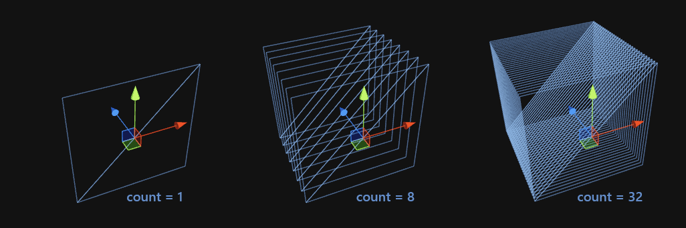

meshFilter.mesh = CreateQuadMesh(
4.5f, // car should be around 4 meters
0.1914063f, 0.08691406f, // the size of each sprite
Random.Range(0,5), Random.Range(0,10) // randomize car sprite
);
// randomize depth value
currentPosZ = Random.value * depth;
// initialize the speed for this car
currentSpeed = speed * (1.0f - speedVariation * Random.value);
// initialize position for this car
currentPosX = (Random.value - 0.5f) * width;
currentPosX += currentSpeed * Time.deltaTime;
if(currentPosX > width/2) {
currentPosX = -width/2;
}
transform.localPosition = new Vector3(currentPosX, 0.0f, currentPosZ);
Properties {
_MyVariable ("My Variable", Range(1,10)) = 4
}
float _MyVariable; // accessible from the material gui
v2f vert (appdata v)
{
// do this per vertex
}
fixed4 frag (v2f i)
{
// do this per pixel
}
We want the cars to be able to animate in parallel,
so they all need to be in the same draw call
In order to get any shader calls at all,
we need to feed it with a mesh...
"What does 1000 un-animated objects look"

- We don't have a "object callback", our shader code runs per vertex
- Use vertex shader, just redo the same work for each vertex
- When processing a vertex, we don't know which object/quad we are processing
- Use z-value
- There is no random function on GPU
- Use hash funtion + a unique value per object
- You cannot write to variables in the code (just output vertex or color data)
- Rewrite the code without state
// init
currentPosX = (Random.value - 0.5f) * width;
// update
currentPosX += speed * Time.deltaTime;
if(currentPosX > width/2) { // wrap around
currentPosX = -width/2;
}
// init
currentPosX = (Random.value - 0.5f) * width;
// update
currentPosX += speed * Time.deltaTime;
// no init needed
// update
float initialPosX = (floatHash(uniqeValueForThisCar) - 0.5f) * width;
float posX = initialPosX + speed * timeInSeconds;
// no init needed
// update
float initialPosX = (floatHash(uniqeValueForThisCar) - 0.5f) * width;
float posX = initialPosX + speed * timeInSeconds;
posX = (posX + width/2.0f) % width - width/2.0f; // wrap around
v2f vert (appdata v) // unity vertex shader
{
v2f o;
float4 pos = v.vertex;
float uniqeValueForThisCar = pos.z;
float timeInSeconds = _Time[1];
pos.z *= _depth; // don't randomize depth, this will ensure they are drawn back to front
float speed = _speed * (1.0 - _speedVariation * floatHash(uniqeValueForThisCar+1.0));
float initialPosX = (floatHash(uniqeValueForThisCar) - 0.5f) * _width;
float posX = initialPosX + speed * timeInSeconds;
posX = (posX + _width/2.0f) % _width - _width/2.0f; // wrap around
pos.x += posX; // offset quadvertex by car position
o.vertex = mul(UNITY_MATRIX_MVP, pos);
return o;
}
 www.retrojdm.com/PixelCars.asp
www.retrojdm.com/PixelCars.asp